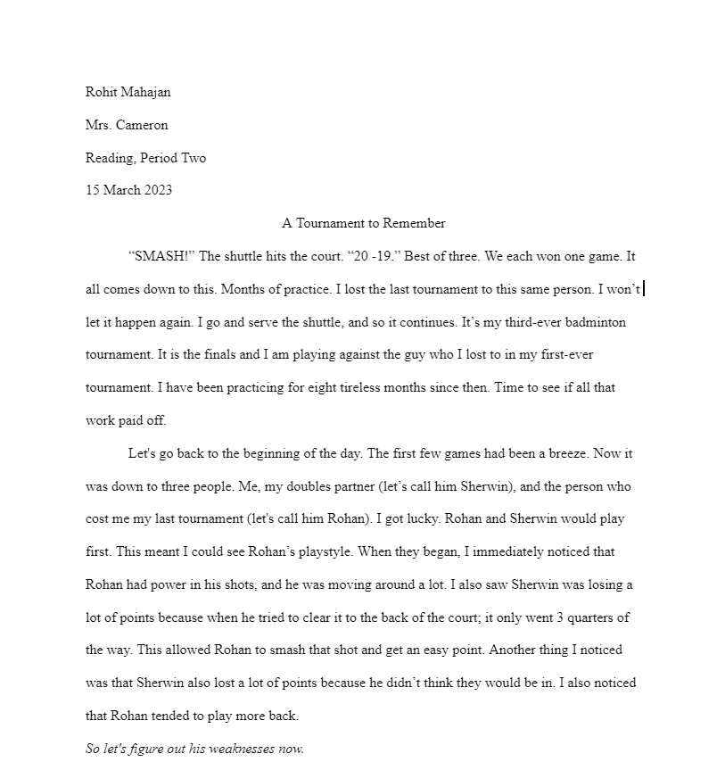

My 7th grade memouir was horrible when compared to my 8th grade one. I had many conventions mistakes, and my sensory details were lacking. I only had 2 to 3 examples of imagery(and that was only because they were required). I also didn't vary my sentence structure. As a result I got a really bad grade, if I had lost one more point I wouldn't have been able to get into honors nest year.
My 8th grade memouir was much better comparatively. There was much more polish and work done on this. I spent spent a lto of time proofreading so there are barely any conventional erros through the passage. I feel like this is one of the best writing pieces I have ever done in my life. I had many sensory details. I also had many examples of umagery, this time I didn't do it because it was required, but because it enchanced my writing. I also varied the senntence structures and used way less "I"s. On this assingment I got a decent grade on 96%.